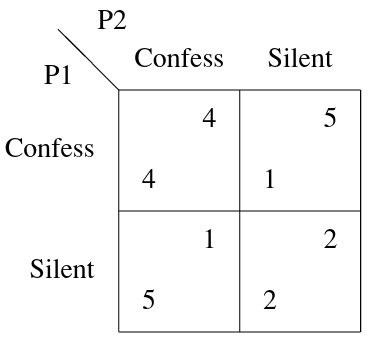
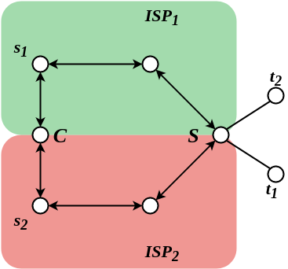
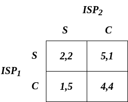
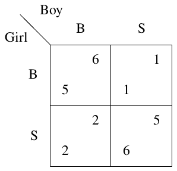

ADRC - Lesson 19
Indice
Algorithmic Game Theory
[INTRODUZIONE DISCORSIVA SU Algorithmic Game Theory…]
Coordination Games
La Teoria dei Giochi consente di modellare situazioni in cui molteplici partecipanti interagiscono tra di loro e le loro azioni sono influenzate da ciò che fanno gli altri. Consideriamo alcuni esempi, in cui ogni individuo (o player) sceglie simultaneamente agli altri un'azione da un'insieme di possibili strategie.
Esempio 1: Prisoner's Dilemma
Due criminali sono incolpati di due crimini, uno meno grave del quale se ne hanno le prove, e uno molto grave del quale però c'è solo il sospetto. La pena per il reato meno grave è di 2 anni, mentre la pena per quello grave è di 5 anni. I due criminali vengono separati ed interrogati. In questa maniera non possono mettersi d'accordo sulla versione dei fatti. Ai due criminali viene proposto un accordo: chi confessa che l'altro complice è responsabile del reato più grave, riceverà una riduzione della pena di 1 anno. In base a tutte le possibili strategie che i due criminali possono adottare, è possibile modellare il guadagno che ne ricavano con una tabella, che chiameremo matrice dei costi.

Figura 1: Cost Matrix.
Dato che i due non possono in alcun modo mettersi d'accordo su cosa fare, allora un buon approccio è quello di considerare tutte le situazioni
possibili, ovvero la situazione in cui il complice confessa e la stiuazione in cui non confessa.
Supponiamo di essere il "giocatore" (o criminale) P1.
Se il nostro complice P2 dovesse confessare, la strategia che ci consente di attenuare la nostra pena sarebbe quella di confessare a nostra volta.
Infatti, non confessare ci farebbe fare il massimo della pensa, 5 anni.
Viceversa, se confessassimo avremmo uno sconto di 1 anno, per un totale di 4 anni.
Se invece il nostro complice P2 decidesse di essere fedele e di non parlare, in ogni caso ci converrebbe confessare la sua colpevolezza (trandendolo).
Infatti, se non confessiamo, entrambi otteremmo una pena di 2 anni.
Possiamo però abbassare la nostra pena ad 1 solo anno confessando la colpevolezza di P2, che poveraccio dovrà farsi 5 anni di carcere.
Osservare che la situazione migliore in generale è quella in cui nessuno confessa.
Dato che però P1 non può dare per scontata la fedeltà di P2, è ragionevole pensare che l'unica situazione di stabilità possibile è quando entrambi confessano.
Infatti, qual'ora un giocatore non confessasse, potrebbe comunque migliorare la sua situazione confessando, riducendo la propria pena di un anno.
In questi tipi di casi, ovvero quando una strategia migliora sempre la propria situazione personale indipendentemente dalle azioni degli altri, si dice che tale strategia è una strategia dominante.
Esempio 2: ISP1 Routing Game
In questo gioco ci sono due Internet Service Providers che devono decidere dove redirigere il flusso di informazioni, da una srogente \(s\) ad una destinazione \(t\).
Per ogni messaggio che passa lungo le proprie connessioni, l'ISP in questione pagherà un costo simbolico di 1.
Esistono due nodi di confine tra i due ISP, i nodi \(C\) ed \(S\).
Ogni player (ISP1 e ISP2) deve decidere se mandare il flusso attraverso \(C\) (e quindi far pagare parte del traggitto all'ISP avversario), oppure attraverso
il nodo \(S\), e pagare tutto l'intero tragitto.
L'immagine successiva rappresenta la stiuazione appena descritta

Figura 2: The ISP routing problem.
In questo caso la matrice dei costi è esattamente quella del dilemma dei prigionieri

Figura 3: Cost Matrix.
perciò anche in questo caso confiene a entrambi i player essere "scorretti" ed "egoisti", trasmettendo verso il nodo \(C\).
Definizione di Strategia
Più formalmente, in ogni gioco esiste un insieme di \(n\) giocatori (o player) \(\lbrace 1, 2, ..., n \rbrace\).
Ogni giocatore \(i\) ha un suo insieme di strategie possibili \(S_i\).
Per giocare, ogni giocatore \(i\) deve scegliere una strategia tra le sue possibili \(s_i \in S_i\).
Indichiamo con
\[
s = (s_1, s_2, ..., s_n) \in S \equiv S_1 \times S_2 \times ... \times S_n
\]
il vettore delle strategie o combinazione di strategie scelte da tutti gli \(n\) giocatori.
Ogni vettore di strategie \(s \in S\) definisce anche una ricompensa (o payoff) per ogni player che ne descrive il guadagno che ne ottiene in seguito alle strategie applicate in \(s\). Più precisamente
\begin{align*} &p_1 : S \rightarrow \mathbb{R}\\ &p_2 : S \rightarrow \mathbb{R}\\ &\vdots\\ &p_n : S \rightarrow \mathbb{R} \end{align*}
dove \(p_i(s)\) è il guadagno che ricava il giocatore \(i\) dall'insieme di strategie \(s \in S\).
Ovviamente si sta assumendo che tale gioco prevede solo dei "premi" (payoffs) da voler massimizzare, ma in realtà potrebbero capitare giochi
in cui si vuole minimizzare una perdita.
In tal caso la notazione è la medemisa, con la differenza che \(p_i(s_1) \geq p_i(s_2)\) può star ad indicare che \(s_1\) è migliore o peggiore rispetto a \(s_2\) per il player \(i\),
in base al contesto in cui ci si trova.
Dominating Strategy
Una strategia \(s_i^* \in S_i\) è una strategia dominante per un player \(i\) se \(s_i\) è la scelta migliore che \(i\) può fare indipendentemente da quello che scelgono di fare gli altri player.
Più formalmente sia un vettore di strategie \(s \in S\), definiamo con \(s_{-i}\) il vettore \((n-1)\)-dimensionale contenente tutte le strategie dei giocatori eccetto \(i\), ovvero
\[
s_{-i} = (s_1, s_2, ..., s_{i-1}, s_{i+1}, ..., s_n)
\]
La strategia \(s_i^*\) è dominante per \(i\) se presa un'altra qualsiasi strategia \(s_i \in S_i\) vale che
\[
p_i(s_i^*, s_{-i}) \geq p_i(s_i, s_{-i})
\]
minore o uguale se consideriamo problemi di minimizzazione.
Dominating Strategy Equilibrium
Una combinazione di strategie \(s^* = (s_1^*, s_2^*, ..., s_n^*)\) è una Dominating Strategy Equilibrium (DSE) se per ogni \(i\), \(s_i^*\) è una strategia dominante,
ovvero se \(\forall s \in S\)
\[
p_i(s_i^*, s_{-i}) \geq p_i(s_i, s_{-i})
\]
Avere una strategia dominante per ogni singolo player è un requisito troppo stringente, infatti i giochi che accettano un DSE sono davvero rari.
Per questo motivo necessitiamo di trovare una condizione meno stringente, che può essere quindi applicata su una grande vastità di giochi.
Nash Equilibrium
Un Equilibrio di Nash (o Nash Equilibrium) è una strategia \(s \in S\) nella qualle a nessun player conviene cambiare strategia personale.
Più formalmente \(s\) è un NE2 se, data un'altra generica strategia \(s' \in S\), è vero che per ogni player \(i\)
\[
p_i(s_i, s_{-i}) \geq p_i(s_i', s_{-i})
\]
ovvero al player \(i\) scegleire \(s_i'\) non migliora la situazione rispetto ad \(s_i\).
La differenza col DSE, e che in un NE ad ogni nodo non conviene cambiare strategie dipendentemente dalle strategia scelte dagli altri.
In un DSE invece ad ogni player non conviene mai cambiare strategia, indipendentemente dalle strategie degli altri.
Esempio 3: Battle of sexes
Consideriamo un gioco in cui due giocatori, un ragazzo (Boy) e una ragazza (Girl), devono decidere come trascorrere la serata.
Le due possibilità sono: andare a una partita di calcio o al cinema.
Il ragazzo preferisce il calcio (opzione B) e la ragazza preferisce cinema (opzione S), ma entrambi vorrebbero trascorrere la serata insieme piuttosto che separatamente.
Esprimiamo nuovamente le preferenze dei giocatori tramite payoff (benefici) come segue

Figura 4: La strategia B indica andare alla partita di calcio, mentre S indica il cinema.
Le due situazioni in cui entrambi i giocatori scelgono le stesse strategie sono delle situazioni stabili.
Inoltre a nessuno dei due conviene cambiare strategia, perciò le combinazioni di strategie \((B,B)\) e \((S,S)\) sono entrambi equilibri di Nash.
Notare infine che non ci sono strategie dominanti, perché al player Boy conviene scegleire \(B\) se Girl sceglie \(B\), ed \(S\) se Girl sceglie \(S\).
In una strategia dominante invece, ci dovrebbe essere una scelta sempre migliore per Boy, indipendentemente da ciò che scelgie Girl.
[DA FINIRE]